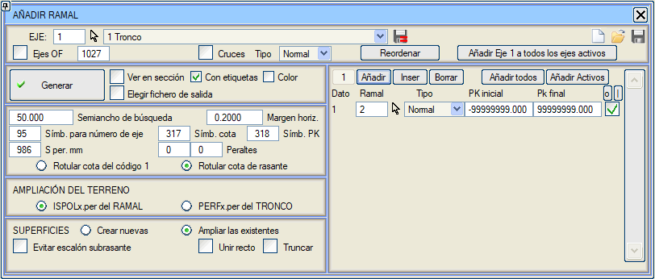
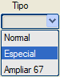
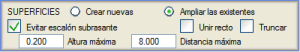
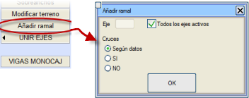
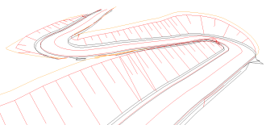

Bu araç, bir ISPOLa.per dosyasına, diğer ISPOL#.per dosyalarında tanımlanmış yüzeyleri eklemeyi sağlar. Böylece, a ekseninin enkesitlerinde, # eksenlerine ait yüzeyler de görüntülenir. Ortak alanların üst üste binmesini önlemek için, bu işlemin a ekseni ile diğer eksenler arasındaki birleşim (entronque) geometrisi tanımlandıktan sonra yapılması önerilir.
Bu araç; katılım kolu ekseninde bulunabilecek istinat duvarı temel yüzeylerini, temel kazısını, döşemeyi (duvar+döşeme) tanımlayan yüzeyleri, kafa hendeklerini, köprü tabliyelerini, kirişleri ve eklenen eksenlerde mevcut olan her türlü sembolü (raylar ve traversler dahil) dikkate alır. Eklenen semboller için, ana eksene göre boyuna eğim ve şevk (esviaje) açıları dikkate alınarak uygun yatay ve düşey deformasyon katsayıları uygulanır.

Diyalog kutusu aşağıdaki seçenekleri sunar:
| Sanat Yapısı Eksenleri | Etkinleştirilirse, sanat yapısı eksenleri ile olan kesişimleri, sanat yapısı numarasını belirten bir sembol ile gösterir. Bu gösterim hem anlık enkesit görüntüleyicide hem de sonuç .per dosyasına dahil edilir. |
| Kesişimler |
Bu onay kutusu etkinleştirilirse, mevcut eksenin ana eksen veya kesen eksen olarak dahil olduğu kesişimlerin (kavşak) birleşim geometrileri ve eklenecek eksenler listesindeki aktif eksenlerin kesişimleri de eklenir.
|
| [Tümünü Ekle] |
Tüm eksenleri mevcut eksene ekler.
|
| [Aktif Olanları Ekle] | Aktif gruplarda veya modellerde bulunan eksenleri ekler. |
[Ekle]
[Araya Ekle]
[Sil] |
Kesilecek katılım kollarını tanımlar. Katılım kolu alanına eksen numarası ve tip girilir. Özel tip, ana eksenin bir enkesitinin aynı şevi farklı bölgelerde kesebileceği küçük yarıçaplı veya dar kurplu eksenler için kullanılmalıdır (bu durumda kesişimler enkesit üzerindeki mesafeye göre sıralanır). Kesişimler kutusu etkinleştirildiğinde, diğer eklenen katılım kollarında olduğu gibi normal veya özel tip seçimi yapılabilir.
67 Genişlet seçeneği, Mevcut yüzeyleri genişlet seçeneği ile birlikte kullanılır. Tüm platformun ana eksen ile tanımlandığı demiryolu hat gruplarında (playa de vías), balast yüzeyini (S67) eklenen eksenlerin balast yüzeyleri ile tamamlamayı sağlar. Katılım kolundan sadece 67 numaralı yüzey ve tüm semboller (hatlar, traversler, eksenler, ...) alınır.
Her katılım kolu için, ekleneceği bir kilometre aralığı tanımlanır.
|
| Yeniden Sırala | Eksen numarasına göre yeniden sıralar. Mevcut yüzeyleri genişlet seçeneği aktifse dikkatli olunmalıdır, çünkü bu seçenek sonucu değiştirebilir. |  | Bu seçenekle katılım kolları ekrandan tıklanarak seçilebilir. | | N Eksenini tüm aktif eksenlere ekle | Bu seçenek, tüm aktif eksenlerin .vol dosyalarını açar ve mevcut ekseni (eğer listede değilse) her birinin Katılım Kolu Ekle listesine yerleştirir. |
Oluştur
|
Tanımlanan tüm katılım kollarını ekler.
|
Enkesitte Göster
|
Eğer katılım kolları önceden hesaplanmışsa, ANLIK ENKESİT penceresinde ana eksene göre konumları ve katılım kollarının arazi yüzeyleri görüntülenecektir.
|
| Renk | Bu kutu etkinleştirilirse, Anlık Enkesit penceresinde eklenen katılım kollarının yüzeyleri, kendi grupları için tanımlanmış renkte gösterilir. |
| Çıktı dosyası seç |
Bu kutu etkinleştirilirse, kullanıcı, oluşturulan enkesitleri ana eksenin ispol#.per (# eksen numarasıdır) dosyasının üzerine yazmak yerine, kendi seçeceği yeni bir dosyaya kaydetme seçeneğine sahip olur. |
Yarı Arama Genişliği
|
Mevcut eksenden katılım kolu/kollarına olan ve bu kolların dikkate alınacağı maksimum mesafe. Bir katılım kolu ekseni bu yarı genişliğin dışına çıktığı anda, o eksen artık dikkate alınmaz.
|
Yatay Boşluk
|
Bir eksen eklendiğinde, belirli bir enkesitte kazı hattının (L68) ilk noktası ile ana gövdenin son noktası arasındaki mesafe bu alanda belirtilen değerden büyükse, bu hatlar doğrudan birleştirilmez, arazi yüzeyi üzerinden devam ettirilir. Kesiti oluşturan diğer hatlar (kaplama L67, seçme malzeme L107 vb.) ise aradaki boşlukta kazı hattını (L68) takip eder.
|
Eksen numarası için sembol
|
Eksen numarasını etiketlemek için kullanılan sembol. Katılım kolunun enkesitine eklenir.
Katılım Kolu Ekle ile oluşturulmuş enkesitlerin gösterildiği Anlık Enkesit penceresinde, katılım kollarının üzerinde eksen numarası, kot ve kilometre bilgisi gösterilir. (Anlık Enkesit penceresindeki kot, Katılım Kolu Ekle komutuyla oluşturulan kottan biraz farklı olabilir, çünkü burada hız kazanmak için kot, katılım kolu kesilirken enterpole edilirken, Katılım Kolu Ekle komutunda belirtilen kilometredeki analitik kot yeniden hesaplanır).
|
Kot sembolü
|
Kot bilgisini etiketleyen sembol. Katılım kolunun enkesitine eklenir. Eğer enkesit çizim pafta şablonunda (örneğin ARAMAL.gut) katılım kolunun kotunun etiketlenmesi tanımlanmışsa, mükerrerliği önlemek için S317 sembolü yerine şablonda tanımlı olan sembol çizilir.
|
KM sembolü
|
Eksenin kilometresini etiketlemek için sembol tipi. Katılım kolunun enkesitine eklenir.
|
mm cinsinden dever sembolü
|
Demiryolu katılım kolları için dever bilgisini mm cinsinden ekleme imkanı. (örn. S986 h=120mm)
|
| Deverler | Karayolu veya otoyol katılım kolları için, bu 2 kutucuk kullanılarak dever etiketlemesi eklenebilir. Bu etiketleme için kullanılan S1025 ve S1026 sembolleri kütüphaneye dahildir. Bu etiketleme enkesit editöründe ve enkesit çizimlerinde görülebilir, ancak Anlık Enkesit penceresinde görünmez. Önceki bir sürümden bir .vol dosyası yüklendiğinde, bu etiketleme devre dışı olarak gelir, ancak yeni bir .vol dosyası oluşturulduğunda veya sıfırlandığında varsayılan olarak etkinleştirilir. Etiketlenen deverler, katılım kolunun belirtilen kilometresindeki gerçek deverlerdir ve bu nedenle, katılım kolunun azimutu ana ekseninkinden farklıysa, enkesitte görünen zahiri deverden farklı olabilirler. |
Kırmızı kotu kullan
|
Bu seçenek etkinleştirildiğinde, etiketlenen kot ve eksen, KM, kot sembollerinin konumu, enkesit modelinden kesit alınarak elde edilen kot yerine, o kilometredeki katılım kolunun analitik kırmızı kotunu kullanır.
Programa, katılım kolunun 1 numaralı kodunun kotunu etiketlemesini söyleyebilirim.
|
Arazi genişletmesi, jeoteknik yüzeyleri uzatmak için gerekli bilginin nereden alınacağını belirtir ve iki seçenek sunar:
| KATILIM KOLUNUN ISPOLx.per'i |
Program, ana gövdenin ISPOL#.per dosyasındaki bitkisel toprak, zayıf zemin, sağlam zemin ve kaya yüzeylerini, katılım kollarının dosyalarındaki verileri kullanarak tamamlar.
|
| ANA GÖVDENİN PERFx.per'i |
Ana gövde ile katılım kolu arasında arazi bilgisi eksik olan bir boşluk olması durumunda, program bu bilgiyi ana gövdenin arazi enkesit dosyası olarak kullanılan dosyadan çıkarmaya çalışır. Bu dosya, kamulaştırma sınırları ile kesilmediği için daha geniş bir alanı kapsayabilir.
|

|
Ana gövde tünel kesitindeyse, katılım kolundan gelen tüm arazi katmanları alınır. |
Yüzeyler bölümünde, programa katılım kollarının hangi tip yüzeyle temsil edileceği iki seçenek arasından belirtilir:
| Yeni oluştur |
Yüzeyler çizim amacıyla eklenir ve a ekseninin daha sonraki hacim hesaplamalarını etkilemez, çünkü eklenen yüzeyler hacim hesaplayıcısı tarafından dikkate alınmayan tiplerde oluşturulur.
İşlem, a ekseni enkesitlerinin konumuna ve yönüne göre diğer eksenin yüzeyleri üzerinden enkesitler alınarak ve bu eksenin 67, 68, 107 vb. yüzeyleri analiz edilerek gerçekleştirilir (demiryollarında balast altı ve koruyucu tabaka da dahil edilir).
Bu seçenek işaretliyken katılım kolu eklendiğinde, tüm katılım kolları orijinal yüzeylerin aynı kopyalarıyla (ilk kopya grubu) oluşturulur. Enkesit editöründe bunlar tekrarlanan yüzeyler olarak görünmez, çünkü temsil ettikleri eksen numarasıyla (düzenlenebilir çizgilerdeki model) ayırt edilirler.
Bu seçenekle program, güzergah projelerinde kullanılan çizgi tiplerinin kopyalarını kullanır.
Yeni yüzeyler oluşturularak (kopyalar kullanılarak) eklenmiş katılım kolları olan enkesitlerde, Alanlar ikonu ile ana eksendeki alanları veya katılım kollarından birindeki alanları ölçmek mümkündür.
|
| Mevcutları genişlet |
Katılım kolunun kazı, kaplama, seçme malzeme, balast altı ve koruyucu tabaka yüzeyleri, yeni yüzeyler oluşturmak yerine, ana gövdedeki karşılık gelen yüzeyleri genişletir ve sonraki bir hacim hesaplamasını etkiler. Bu, yüzeyler arasında boşluk olmadığında geçerlidir.
Mevcut yüzeyler genişletildiğinde, eklenen yüzeylerin noktaları (arazi hariç) 4000 kodundan başlayarak ardışık olarak kodlanır.
Bu seçenekle, ardışık katılım kollarının numaralarının tanımlandığı sıranın, bitişikliklerine göre (örneğin bir demiryolu hat grubunda) olması önemlidir. Eğer katılım kolunda, ana gövdede olmayan bir yüzey (örneğin bir drenaj tabakası) varsa, yeni yüzeyler eklenir. Ancak, arazi yüzeyleri (bitkisel, zayıf, sağlam, kaya, kaya2,...) için, ana gövdenin enkesitinde görünmüyorlarsa, katılım kolunda görünseler bile eklenmezler.
Katılım kolu ile ana gövde arasındaki bir yüzeyin ayrımı, önceden belirlenmiş yatay boşluktan büyükse, bu yüzey gizli segmentler kullanılarak birleştirilir.
Ayrıca iki seçenek daha mevcuttur:
- Doğrusal birleştir: Kesilmiş yüzeyleri düz bir çizgi parçasıyla birleştirir.
- Buda: Önceden bir budama işlemi yapmadan bir enkesit dosyası eklemeyi sağlar. Bu seçenek, farklı yüzeylerin kesişimini belirler ve birini diğerine eklemeden önce her iki enkesiti de budar.
Birleştirilecek iki eksenin tesviye yüzeylerinin bir basamak oluşturduğu durumlarda, Tesviye yüzeyi basamağını önle kutucuğunu tıklayabiliriz. Bu komutla, düzeltilecek maksimum bir basamak yüksekliği ve iki tesviye yüzeyinden birinin diğerini kesmeden önce uzayabileceği maksimum bir mesafe belirtmemiz gerekir. Basamağı düzeltebilmek için tesviye yüzeyleri paralel olmamalıdır.
Bu araç, bir demiryolu projesinde tesviye yüzeyinin yanı sıra balast altı ve koruyucu tabaka yüzeylerindeki olası basamakları da önler.

Mevcut eksenimiz bir tünel ekseni ve katılım kolu değilse, tünel arazi ve kaya yüzeyleri (197 ve 397), normal arazi ve kaya yüzeyleri (66 ve 103) ile tamamlanır.
|
Birden fazla eksen içeren bir dosya elde etmek isteniyorsa, tüm eksenler elde edilene kadar işlem tekrarlanmalıdır. Bu durumlarda, bu seçenekle daha önce oluşturulmuş semboller yeni dosyaya aktarılmaz.
Bu işlemi, her eksenin kendi tanımlı verilerine göre tüm aktif eksenlere eş zamanlı olarak uygulama imkanı vardır. Bu seçeneğe KOT → MENÜLER VE SEÇENEKLER → [TÜMÜ] → [Katılım Kolu Ekle] yolundan ulaşılır. Kesişimler, her bir .vol dosyasında kayıtlı bilgiden bağımsız olarak etkinleştirilebilir veya devre dışı bırakılabilir.
Bu menüde yapılan tanımlama, otomatik olarak mevcut eksenin .vol dosyasına kaydedilmesine rağmen, bağımsız olarak .anr dosyalarına [Kaydet] / [Yükle] yapılabilir.
Mevcut eksenin kendisinin de eklenmesine izin verilir. Bu sayede, 180 dereceye yakın veya benzeri kurplara sahip dağ yolları gibi eksenler bu menü aracılığıyla görüntülenebilir.

|